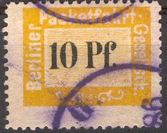
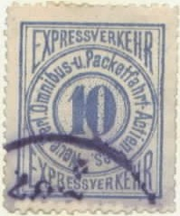
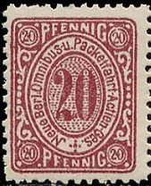
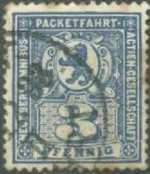
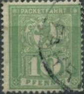
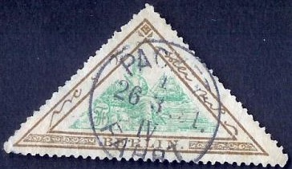

Return To Catalogue - Berlin local issues 19th century, part 2 - Germany - Other local issues
Note: on my website many of the
pictures can not be seen! They are of course present in the
catalogue;
contact me if you want to purchase it.

(Reduced sizes)
10 p yellow 15 p red (larger size) 15 p red (larger size, with inscription 'Doppel-Packet' below) 25 p blue
(Reduced sizes, note the special cancels)
5 p green 10 p blue 30 p red 50 p yellow
(Reduced size, with violet cancel "B.P.G.")
10 p violet 15 p brown 20 p brown 25 p lilac
(Reduced sizes)
(Reduced size)
2 p blue 2 p brown 3 p black 3 p blue

5 p green 10 p blue 30 p red 50 p orange
(Special cancel, reduced size)
2 p brown 3 p blue
Two sizes exist of this issue, the designs are slightly different (for example the corners are rounded in the smaller sized stamps).
(Typical cancel, reduced size)

(Reduced sizes)
10 p violet 20 p brown
Two types exist of this issue; with solid background and with dotted background (1887); the sizes of the stamps are also slightly different.
5 p green 10 p blue 30 p red 50 p yellow
2 p brown 3 p blue 10 p grey 10 p lilac 20 p green
I've seen 2, 3 and 10 p imperforate.
3 p blue and brown
I've seen this stamp imperforate.
5 p olive 10 p orange 30 p red 50 p brown 50 p violet
I've seen the values 5 and 50 p violet imperforate.
Inscription "NEUE BERL. OMNIBUS- u. PACKETFAHRT- ACTIEN - GESELLSCHAFT"

2 p brown 3 p blue 10 p lilac 20 p green
Inscription "BERLINER PACKETFAHRT ACTIEN - GESELLSCHAFT" (with "C" in "ACTIEN")
1 p yellow 2 p brown 3 p blue 20 p green 30 p red 50 p violet
Inscription "BERLINER PACKETFAHRT AKTIEN - GESELLSCHAFT" (with "K" in "AKTIEN")
1 p yellow 1 p orange 2 p brown 3 p blue 5 p olive 10 p lilac 15 p orange 20 p green 30 p red 50 p violet
With inscription "1900"
3 p red
Inscription "BERLINER PACKETFAHRT GESELLSCHAFT" (1904)
5 p olive 15 p orange 20 p green 30 p red
Inscription "PACKETFAHRT" (1906)

5 p brown 10 p green 15 p blue 20 p orange 30 p olive 50 p red 50 p violet (1921)
Several overprints were still issued from 1912 to 1923, but they were only valid for parcels:
A special stamp was issued for the bookshop association in 1896:
("Buchhandler" or bookshop stamp)
(Reduced sizes)
3 p red 3 p blue 3 p green 3 p violet
3 p orange and blue
Envelopes, examples:
Packetfahrkarte and die Expedition des Berliner Lokal-Anzeiger.
Zoom-in of the previous card and another cut from card in a very
similar design.
Special parcel stamps were issue after 1900 by this company (after letters could only be delivered by the government mail system), examples, stamps with a 'P' in the centre:

"ABRECHNUNGS-MARKE" 1 M yellow and 3 M violet.
{kind=link}
{kind=link}
{kind=link}
{kind=link}